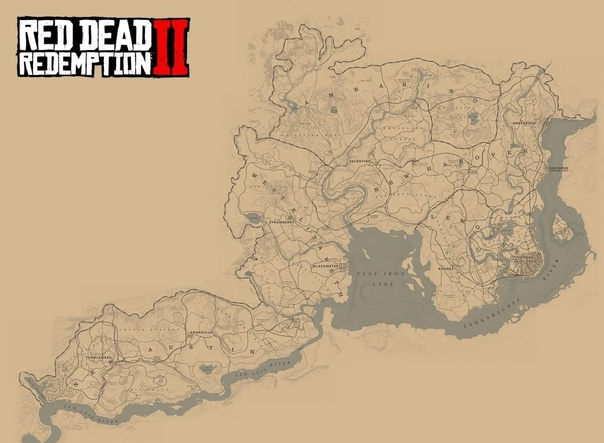
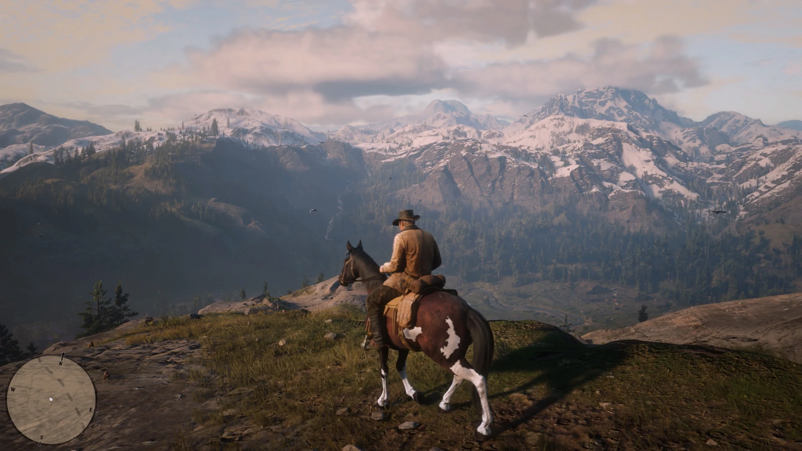
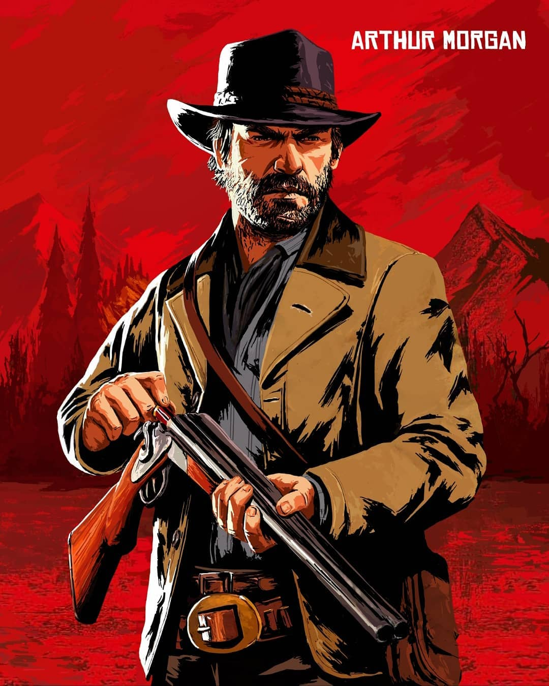
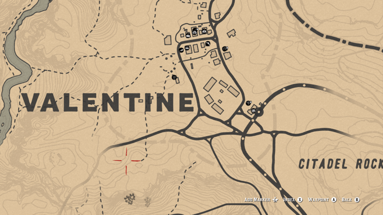
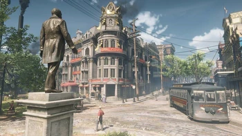
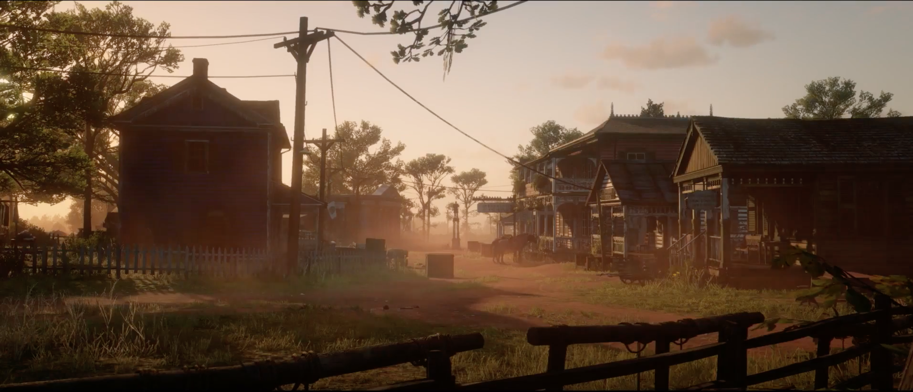
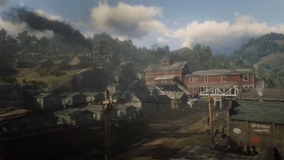
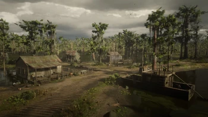
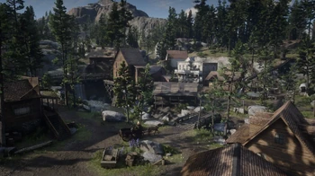

Red Dead Redemption 2
Компьютерная игра в жанрах action-adventure и шутера от третьего лица с открытым миром, разработанная Rockstar Studios и выпущенная Rockstar Games для консолей PlayStation 4 и Xbox One 26 октября 2018 года и для персональных компьютеров под управлением Windows 5 ноября 2019 года. Является третьей игрой в серии Red Dead и приквелом к Red Dead Redemption 2010 года.
Сюжет
План банды весьма прост — выжить любой ценой, накопить приличную сумму денег и начать новую жизнь с чистого листа где-то на Таити или в Австралии. И вроде бы план прост, однако ситуация постоянно выходит из-под контроля благодаря хитроумным аферам лидера банды — Датча ван дер Линде. Данный персонаж является довольно харизматичной личностью, у него прекрасно развиты ораторские способности, и он способен вести за собой кого угодно. Собственно, этим Датч и занимается на протяжении всего повествования.Однако главным героем игры является Артур Морган — самый надежный и способный соратник Датча. Артур не так харизматичен, как лидер группы, однако обладает другими важными качествами. На протяжении всего повествования мы будем наблюдать за изменениями личности Артура, отчасти игрок тоже будет влиять на эти трансформации.

Артур Морган
Главный герой игры, лейтенант банды. Его мать умерла, когда Артур был совсем маленьким, а отца вскоре арестовали и убили на глазах Моргана. В возрасте около 14 лет Артур был взят на попечение Датчем Ван дер Линде и Хозией Мэттьюзом. Рассматривая Датча как приёмного отца, Артур проникся видением Датча жизни, свободной от цивилизации и верховенства закона. Также Артур имел сына по имени Айзек от молодой официантки Элизы, которых Артур часто навещал, но вскоре они были убиты грабителями за небольшую сумму денег.

Основные члены банды
Датч Ван дер Линде (англ. Dutch van der Linde) — лидер банды. Датч был кочевником и идеалистом, полагая, что банда может изменить мир с помощью анархии.
Артур Морган (англ. Arthur Morgan) — главный герой игры, лейтенант банды. Его мать умерла, когда Артур был совсем маленьким, а отца вскоре арестовали и убили на глазах Моргана.
Джон Марстон (англ. John Marston) — вторичный главный герой игры. Мать Джона была проституткой, которая умерла во время родов, а его отец был убит в ходе драки в баре, когда Джону было 8 лет.
Эбигейл Марстон (урожденная Робертс) (англ. Abigail Marston/Roberts) — жена Джона. В детстве Эбигейл была сиротой и позже зарабатывала деньги будучи проституткой. Она вступила в банду в 1894 году при помощи Дядюшки, и в конечном итоге влюбилась в Джона Марстона, вскоре забеременела сыном Джеком.
Хозия Мэттьюз (англ. Hosea Matthews) — солидер банды, лучший друг Датча. В молодости Хозия был актёром, но позже стал грабителем. Хозия впервые встретился с Датчем примерно за 20 лет до событий игры, когда они пытались ограбить друг друга по дороге в Чикаго.
Банда "Ван Дер Линде"
Корни банды лежат в судьбоносной встрече двух грабителей — Датча и Хозии, которая произошла примерно в 1877 году. Датч и Хозия встретились у костра по дороге в Чикаго. Хозия попытался обмануть и ограбить Датча, но понял, что Датч сделал то же самое и обокрал его. Они оба увидели мастерство друг друга и рассмеялись, решив объединиться и вместе смотреть в будущее. Так была основана банда «Ван дер Линде». Примерно в это же время Хозия встретил женщину по имени Бесси, которая впоследствии стала его женой.
Пара оказалась в городе Кеттеринг, штат Огайо, где они начали проводить аферу над несколькими людьми. Они выдавали себя за международных торговцев, заставляя двенадцать местных жителей покупать акции на 300 долларов в вымышленную португальскую судоходную компанию. В конечном итоге они были обнаружены и арестованы Шерифом Кармайклом. 9 марта 1877, пара сбежала из своей камеры неизвестным способом, связав и ограбив шерифа в процессе бегства.
В том же году, когда они встретились, пара наткнулась на четырнадцатилетнего сироту по имени Артур Морган. Он был непослушным ребенком, и они решили взять его под свое крыло, научив читать, писать, стрелять и другим полезным навыкам. Примерно в это же время Датч завел романтические отношения с женщиной по имени Сьюзан Гримшо, которая также стала членом их банды. Банда формально действовала как семья, проводя долгие ночи, играя в покер и другие игры, а так же заботясь друг об друге. Например, Бесси научила Артура играть в домино. В какой-то момент банда завела собаку по имени Коппер, с которой Артур особо сблизился и начал о ней заботиться.
6 Городов из RDR2

Валентайн
Небольшой скотоводческий городок, расположенный на небольшом расстоянии от Нагорья Подкова.В городе можно найти несколько предприятий, включая два салуна, мясную лавку, аптеку, общий магазин, торговцев оружием и многое другое.

Сен-Дени
Сильно индустриализированный город, с развитым промышленным предприятием. Как современный город, он включает в себя мощёные улицы, полицейских в форме и сеть трамвайных линий. Город тёмный и скучный, покрытый слоем тумана, а небо часто покрыто большими облаками густого чёрного дыма.

Роудс
Является главным поселением Скарлетт-Медоуз и находится в центральной части данного региона, к юго-западу от реки Камасса, к северо-востоку от поместья Брейтуэйтов. Ближе к восточной части города расположена, Калига-Холл, плантация Греев.

Аннесберг
Является небольшим шахтёрским городком в Нью-Ганновере. Аннесберг был основан в 1869 году, тем самым являясь одним из самых первых поселений на территории штата.

Лаграс
Является небольшим сплочённым креольским поселением с магазином для наживок и снастей по причине того, что все жители преимущественно занимают рыболовством.

Строберри
Служит «столицей» Большой долины, расположенного примерно в юго-центральной части штата Вест-Элизабет, к юго-востоку от горы Шанн. Хотя город был основан как небольшой лесозаготовительный город, в последние годы он вырос и его новоиспечённый мэр желает сделать его туристическим городом с большой культурой и красивой архитектурой.